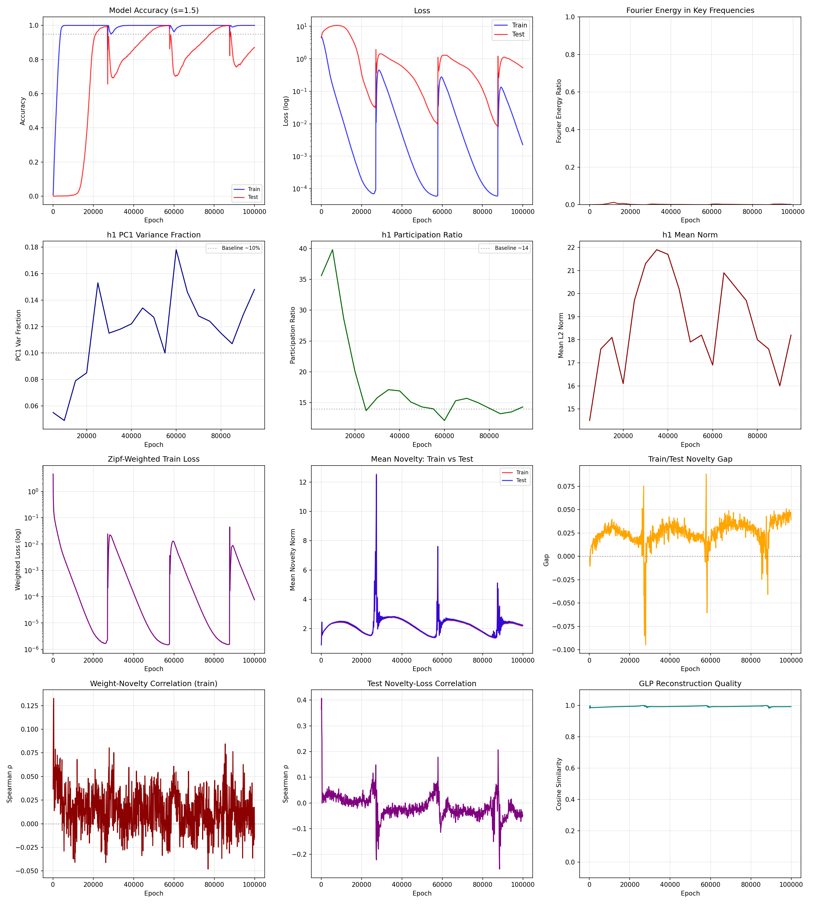
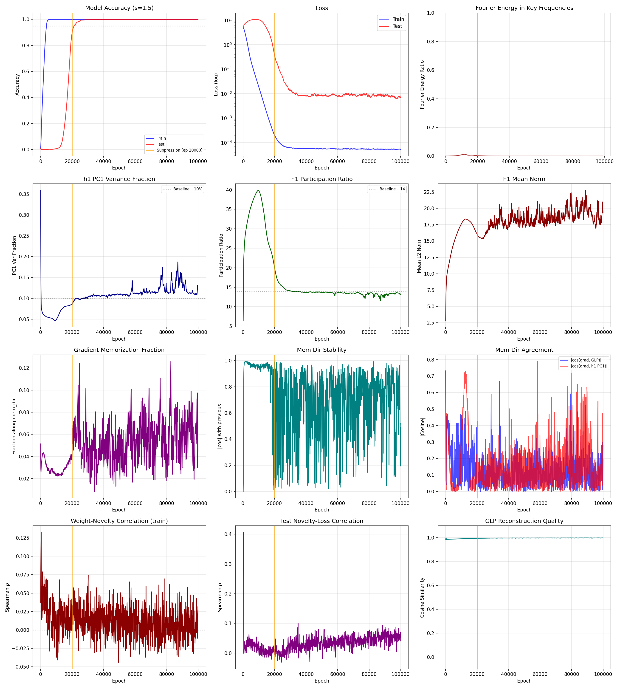
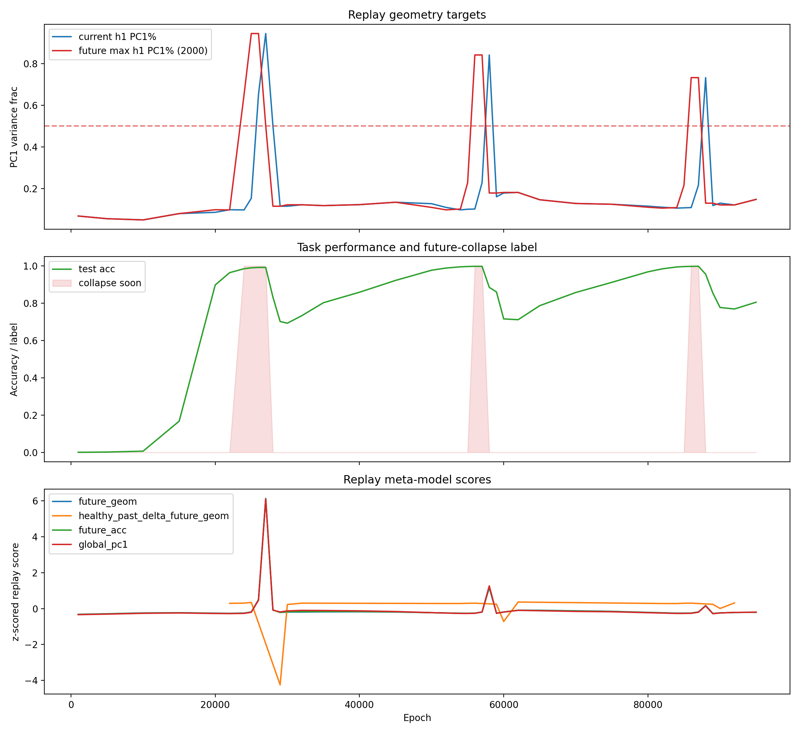
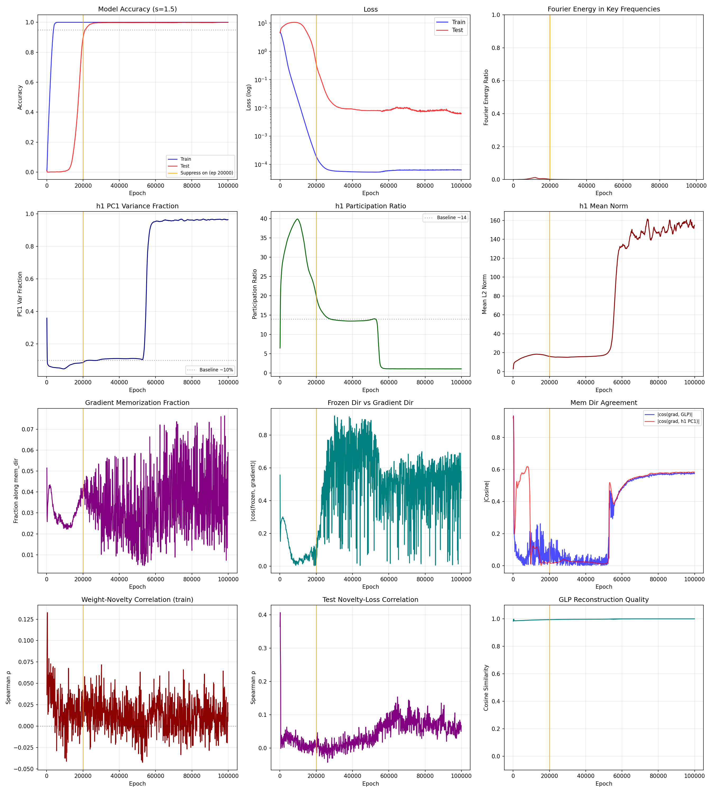

TLDR: We look directly at the activation space of Zipfian grokking models using a Generative Latent Prior (GLP) — a diffusion model trained on the task model’s own activations. We discover that the Sisyphean collapse cycle is driven by a single direction in the model’s penultimate-layer representations. Two independent methods — GLP residual analysis and Zipf-weighted gradient decomposition — converge on the same 1-D memorization subspace. Projecting this direction out of the backward pass via a custom gradient rule completely eliminates the collapse pathology, and a replay-consuming meta-model can rediscover the direction autonomously.
In the first essay in this series, we introduced Zipfian grokking: modify the loss weighting in a modular arithmetic grokking setup to follow Zipf’s Law, and the model enters a perpetual cycle of grokking and un-grokking — what we called the Sisyphean dynamics. In the second essay, we showed that adding an inverse dynamics auxiliary objective can partially stabilize training by biasing representations toward Fourier structure. But that approach required domain knowledge: someone had to choose the right transformation family.
Here, we take a different approach. Instead of designing auxiliary objectives, we look directly at the model’s own internal representations and ask: what, geometrically, is going wrong?
We train a Generative Latent Prior (GLP)1 — a small flow-matching diffusion model — on the penultimate-layer activations of the task model during training. The GLP learns the empirical distribution of the model’s internal representations: what “normal” activations look like at any given point in training.
The key quantity is the residual: for each training sample, we compute the difference between the model’s actual penultimate-layer activation \(h_1\) and its GLP-denoised manifold projection \(h_1^{\text{manifold}}\):
$$r = h_1 - h_1^{\text{manifold}}$$
The scalar norm \(\|r\|\) tells us how far a sample’s representation is from the learned manifold — a measure of representational novelty. But the full 128-dimensional residual vector tells us something richer: in what direction each sample deviates from normal.
We save full residual vectors at 41 dense snapshot epochs across 100k training epochs of the standard Zipfian grokking setup (\(s = 1.5\), where two training pairs carry ~50% of the gradient).2 The directional structure of the residuals reveals a striking pattern.
At and just before each collapse, the two highest-weight training samples have residuals pointing in nearly the same direction — and that direction is the dominant mode of representational variation:
| Epoch | Test acc | Top-2 cosine | cos(top-2, PC1) | PC1 var% | Phase |
|---|---|---|---|---|---|
| 24,000 | 98.5% | +0.16 | 0.16 | 3.6% | Approaching peak |
| 25,000 | 99.0% | +0.68 | 0.90 | 4.2% | Fourier peak |
| 26,000 | 99.2% | +0.92 | 0.98 | 10.1% | Pre-collapse |
| 27,000 | 99.2% | +0.75 | 0.98 | 16.2% | Collapse onset |
| 28,000 | 83.3% | +0.44 | 0.73 | 4.1% | Collapsing |
At epoch 26,000 — one snapshot before collapse — the memorization direction captures the top-2 residuals almost exactly (cos = 0.98 with PC1). The projections onto this direction track Zipfian weight rank:
| Group | Projection at epoch 27,000 |
|---|---|
| Top-2 (52.6% of gradient) | +24.6 |
| Top-5 | +13.5 |
| Top-10 | +5.6 |
| Top-28 (1%) | +1.9 |
| Population mean | −0.05 |
The memorization pressure from the Zipfian weighting carves a single groove in the 128-dimensional penultimate layer. And the same direction recurs across all three collapse cycles — cosine similarity 0.88–0.93 across collapses separated by 30,000 epochs. The memorization subspace is a structural feature of how Zipfian gradient pressure distorts the Fourier manifold, not an accident of a particular training epoch.
The most important finding is about what happens to the Fourier solution during the pre-collapse phase.
At epoch 27,000, the model still classifies at 99.2% test accuracy, but \(h_1\) is effectively one-dimensional: PC1 captures 94.5% of variance, and the participation ratio — the effective number of dimensions carrying variance, computed as \((\sum \lambda_i)^2 / \sum \lambda_i^2\) — has dropped to 1.1 out of 128. If you classify test samples by nearest class centroid (NCC) in raw \(h_1\) space, accuracy is a pitiful 27.4%. The representations look ruined.
But remove the single memorization direction and measure NCC in the orthogonal complement:
| Epoch | Model acc | NCC (raw h1) | NCC (h1 − PC1) |
|---|---|---|---|
| 24,000 | 98.5% | 99.6% | 98.8% |
| 25,000 | 99.0% | 97.6% | 99.8% |
| 26,000 | 99.2% | 81.9% | 99.9% |
| 27,000 | 99.2% | 27.4% | 99.8% |
| 28,000 | 83.3% | 66.7% | 90.4% |
At epoch 27,000 — where raw \(h_1\) is essentially 1D and raw NCC is 27% — removing one direction recovers 99.8% NCC accuracy. The Fourier solution is completely intact in the 127 dimensions orthogonal to the memorization direction, even when that direction captures 94.5% of variance.
It is like trying to hear a conversation next to a jet engine. The conversation (Fourier structure) hasn’t gotten quieter — the engine (memorization amplification) has gotten louder. This is contamination, not degradation: the generalization structure is hidden by memorization variance, not damaged by it.
After the collapse event (epoch 28,000), the picture changes. Removing the memorization direction no longer helps — the damage is now real structural damage, not recoverable contamination. This confirms the distinction: the pre-collapse phase is a window of opportunity where the solution can be saved by suppressing a single direction.
We now have two independent ways to identify the memorization direction:
Method 1: GLP residuals. The data-driven approach described above — PC1 of the \(h_1\) GLP residual covariance at pre-collapse epochs.
Method 2: Zipf-weighted effective gradient. Compute \(\partial L / \partial h_1\) for each training sample, then weight by the Zipfian loss weights to get the effective gradient — the net force the loss is exerting on \(h_1\) representations. At pre-collapse, the direction of this effective gradient is overwhelmingly aligned with the memorization direction:
| Epoch | Phase | cos(effective gradient, memorization dir) | Top-1% contribution along \(m\) |
|---|---|---|---|
| 24,000 | Build | −0.49 | — |
| 25,000 | Peak | −0.59 | — |
| 26,000 | Pre-collapse | −0.85 | 93.4% |
| 27,000 | Fragile | −0.27 | — |
| 28,000 | Collapsed | +0.10 | — |
The negative sign means the loss gradient points along \(-m\), so gradient descent pushes features along \(+m\) — the memorization direction. At epoch 26,000, 85% of the effective gradient’s direction is memorization force, contributed almost entirely by the top 1% of samples (28 out of 2,822). The generalization gradient lives in the orthogonal complement, distributed broadly across all samples.
The two methods — manifold-based (GLP residuals) and loss-landscape-based (Zipf-weighted gradient) — identify the same direction: cosine similarity > 0.97 at pre-collapse epochs. This convergence is what makes the direction actionable: if the memorization force is concentrated along a single axis, we can neutralize it by projecting that component out of the gradient while leaving the orthogonal generalization signal untouched.
We insert a custom_vjp3 between the encoder output and the classification head. In the forward pass, it is an identity. In the backward pass, it projects the memorization component out of \(\partial L / \partial h_1\):
$$\frac{\partial L}{\partial h_1}\bigg|_{\text{clean}} = \frac{\partial L}{\partial h_1} - \left(\frac{\partial L}{\partial h_1} \cdot \hat{m}\right) \hat{m}$$
We test three conditions, identical in architecture, optimizer, and seed, differing only in whether and how \(\hat{m}\) is chosen:
| Baseline | Gradient-based | Frozen GLP direction | |
|---|---|---|---|
| \(\hat{m}\) source | N/A | Zipf-weighted eff. gradient | PC1 of h1 GLP residuals @ epoch 27k |
| Updated? | — | Every 100 epochs | Never |
| Accuracy collapses | 3 | 0 | 0 |
| Final test acc | 0.871 | 0.999 | 0.998 |


Both suppression conditions completely eliminate the Sisyphean collapse. The gradient-based method, which recomputes the memorization direction every 100 epochs, achieves 99.9% sustained test accuracy with healthy representation geometry throughout (\(h_1\) PC1 stays below 12.5%, participation ratio stays above 11.5).
The frozen GLP direction — extracted once from a snapshot at epoch 27,000 of the unmodified baseline and never updated — is equally effective at preventing accuracy collapse: 99.8% sustained. It does eventually develop a geometric anomaly (\(h_1\) PC1 climbs to 97% around epoch 60k), but this is an artifact of permanently removing one degree of freedom from the optimizer, not a new memorization subspace. The critical test: accuracy stays at 99.9% through this geometric reorganization. A mature Fourier solution, given enough uninterrupted time to consolidate, can survive even extreme geometric distortion.
This is the causal validation. The frozen direction was discovered by a manifold model that knows nothing about Zipfian weights. Yet projecting out this single learned direction from the encoder gradient prevents all future collapses. The memorization subspace is real, low-dimensional, and causally decisive.
The previous sections used directions that were identified by us: we chose which epoch to extract from, which layer to look at, and which analysis to run. Can a meta-model discover the relevant direction on its own?
We treat the 41 saved snapshots from the directional residuals experiment as a replay buffer — a record of the model’s internal representational states across its full training history, including three complete collapse cycles.4 Each snapshot contains the full \(h_1\) activation covariance, which encodes the geometry of the model’s representations at that moment.
We train tiny 1-D probes on these replayed states. Each probe takes as input the recent covariance drift \(\Delta C_e = C_e - C_{e-\Delta}\) — how \(h_1\)’s representational geometry has been changing — and outputs a direction \(\hat{m}\) in \(h_1\), optimized to maximize \(\hat{m}^T \Delta C_e \hat{m}\) at epochs that precede geometric collapse (future peak \(h_1\) PC1 variance). Critically, the probe only trains on states where the model still looks healthy (\(h_1\) PC1 < 0.2), and its input is recent change, not the current state itself. It must find the dangerous axis from recent representational drift while the model still appears fine — a genuinely metacognitive test.
This means the probe trains on epochs like 22,000 and 54,000, where the model has >96% test accuracy and nothing looks wrong yet, and must predict that collapse is coming thousands of epochs later.

The bottom panel is the key result. The healthy past-trajectory probe (orange) assigns high scores to epochs that precede collapse, even when trained only on the first two cycles. It produces its signal from representational drift alone — no access to accuracy, loss, or any outcome measure. The signal is visible thousands of epochs before accuracy begins to drop.
The best healthy past-trajectory probe recovers essentially the same direction as the known memorization axis:
| Reference direction | Cosine with replay-discovered direction |
|---|---|
| Frozen memorization dir @ epoch 27k | 0.999 |
| Residual PC1 @ epoch 58k (cycle 2) | 0.958 |
| Residual PC1 @ epoch 88k (cycle 3) | 0.933 |
This is not approximate alignment — 0.999 cosine in 128 dimensions is near-identity. The replay meta-model, with no knowledge of Zipfian weights, Fourier structure, or modular arithmetic, found the same structural axis that our hand-crafted analysis identified.
The direction also generalizes functionally. Projecting the replay-discovered direction out of raw \(h_1\) on held-out cycle-3 collapse snapshots recovers nearest-class-centroid accuracy:
| Epoch | Raw test NCC | NCC after projection | Phase |
|---|---|---|---|
| 86,000 | 99.8% | 100.0% | Pre-collapse |
| 87,000 | 95.3% | 100.0% | Approaching collapse |
| 88,000 | 70.4% | 94.4% | Collapse |
The alignment and functional recovery results are encouraging, but they are still correlational. The decisive test: does the replay-discovered direction work causally when fed back into the training loop?
We take the direction output by the healthy past-trajectory probe and use it as the frozen suppression direction in the same custom_vjp intervention described above — project it out of \(\partial L / \partial h_1\) starting at epoch 20,000.
| Metric | Baseline | Replay-discovered frozen direction |
|---|---|---|
| Accuracy collapses | 3 | 0 |
| Final test acc | 0.871 | 0.9997 |
| Max test acc | 0.999 (brief) | 0.9998 (sustained) |

The replay-discovered direction eliminates the Sisyphean collapse just as effectively as the hand-identified direction. A meta-model consuming only replayed representational states can autonomously discover a low-dimensional control variable that is causally sufficient to fix the core pathology.
The memorization direction result demonstrates something broader than a fix for a toy problem. It is a concrete example of what we might call metacognitive supervision: modulating a model’s learning based on the organization of its own representations, rather than based on per-example performance.
The relevant control variable has three properties worth highlighting:
These properties — together with the fact that they hold in a setting where we understand the ground truth completely — suggest that similar control variables may exist in larger-scale systems where the ground truth is not known.
Standard training treats models as passive recipients of data: present examples, compute gradients, update weights. The model’s own learned representations — which may already encode rich knowledge about the task’s structure — play no role in deciding how new information should interact with existing knowledge. This is understandably destructive. The Zipfian grokking model already knows the Fourier solution; the problem is that naive backpropagation lets a handful of high-weight examples overwrite that knowledge anyway.
Biological learners do not work this way. The hippocampal-neocortical complementary learning systems interplay5 aggressively filters for information that is genuinely new and surprising before allowing it to interact with consolidated representations. Replay, gating, and consolidation ensure that what a system already knows is protected from what it is currently experiencing.
What we have demonstrated here is a scaled-down but genuine proof of concept for this idea. The model’s own activation space contains enough structure to identify which gradient components are destructive — and suppressing those components lets the model keep what it already knows. The model is, in a sense, more intelligent than we typically treat it as being; it is just rarely given the opportunity to bring that intelligence to bear on its own learning process. This line of work is about giving it that opportunity.
All code for these experiments can be found here.
@article{gilley2026representationsupervision,
title = {Representation as supervision},
author = {Gilley, Jasper},
year = {2026},
month = {May},
url = {https://jagilley.github.io/representation-as-supervision.html}
}autograd.Function.